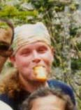
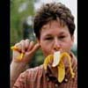
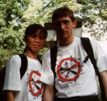
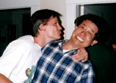
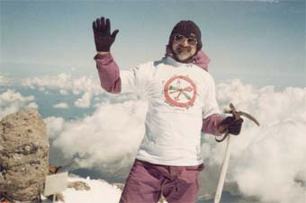

|
 |
John Payne, co-founder of the club. No other photos of him appear to exist. |
|  | Robin Haw, former
TWMC secretary. Now he is apparently the chief gorilla in the zoo of Toronto/Canada |
|
 |
Andreas and Mei. Admittedly not really a picture for the Hall of Shame, but the only one we have of them. |
|
 |
Kouichi, he founded the club together with John |
|  |
Europe's highest mountain! (Stanislav Fedorenko) went there in 2001. |